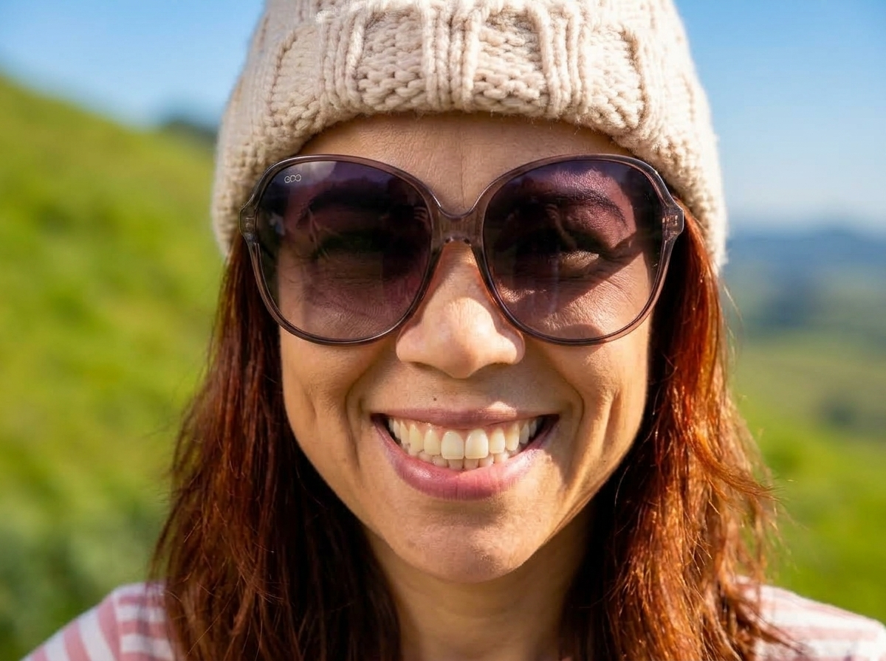

Óculos de Grau
Modelos em acetato nobre e formatos atemporais para seu dia a dia.
Consultar no WhatsAppÓculos que unem conforto, qualidade e personalidade para acompanhar você em todos os momentos.
Na CTI dos Óculos, cada escolha começa com atenção aos detalhes. Nosso propósito é ajudar você a encontrar óculos que combinem conforto, qualidade e estilo.
Porque a armação ideal faz parte da sua rotina, da sua personalidade e da maneira como você vê o mundo.
Vamos encontrar o seu estilo?Do essencial ao seu novo favorito. Descubra as possibilidades para o seu olhar.
Modelos em acetato nobre e formatos atemporais para seu dia a dia.
Consultar no WhatsAppProteção UV com a versatilidade inteligente do 2 em 1.
Consultar no WhatsAppImagens ilustrativas. Consulte os modelos disponíveis com a nossa equipe.
Encontre uma armação que combine com você.
Quero encontrar meu óculosUma conversa com atenção para entender o que você procura.
Formatos e armações para expressar a sua personalidade.
Atenção aos detalhes que fazem parte do seu dia a dia.
Tire suas dúvidas e converse com a gente de onde estiver.

Para ver a vida de outro jeito.Um convite para se inspirar. Fotografias ilustrativas.
Fale com a CTI dos Óculos e encontre uma opção que combine com você.
Conversar pelo WhatsAppUma boa escolha começa com uma boa conversa.
Seu novo olhar pode começar com uma visita. Vai ser um prazer receber você.